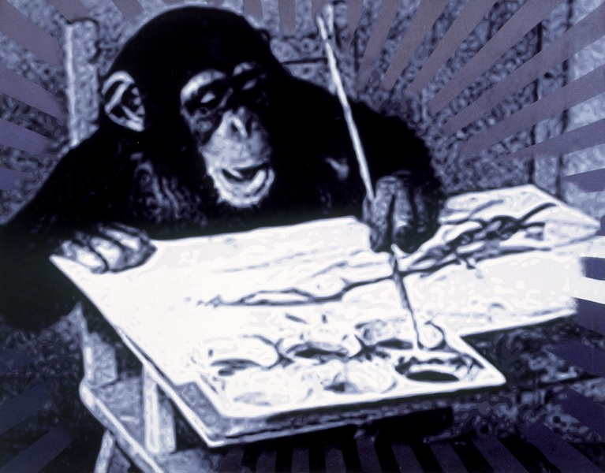

追光（刚果） Sparkling
布面丙烯 Acrylic on canvas
作品描绘了一只名为“刚果”的黑猩猩手持画笔在画画的画面。20世纪50年代这只黑猩猩因出色的绘画技艺名震天下，甚至毕加索和米罗等人都收藏了它的作品。2005年刚果的作品在拍卖的成交纪录也令人乍舌——成交价高出预期的十倍，是拍卖史上第一个也是成交纪录最高的被拍卖的非人类作品。

布面丙烯 Acrylic on canvas
作品描绘了一只名为“刚果”的黑猩猩手持画笔在画画的画面。20世纪50年代这只黑猩猩因出色的绘画技艺名震天下，甚至毕加索和米罗等人都收藏了它的作品。2005年刚果的作品在拍卖的成交纪录也令人乍舌——成交价高出预期的十倍，是拍卖史上第一个也是成交纪录最高的被拍卖的非人类作品。